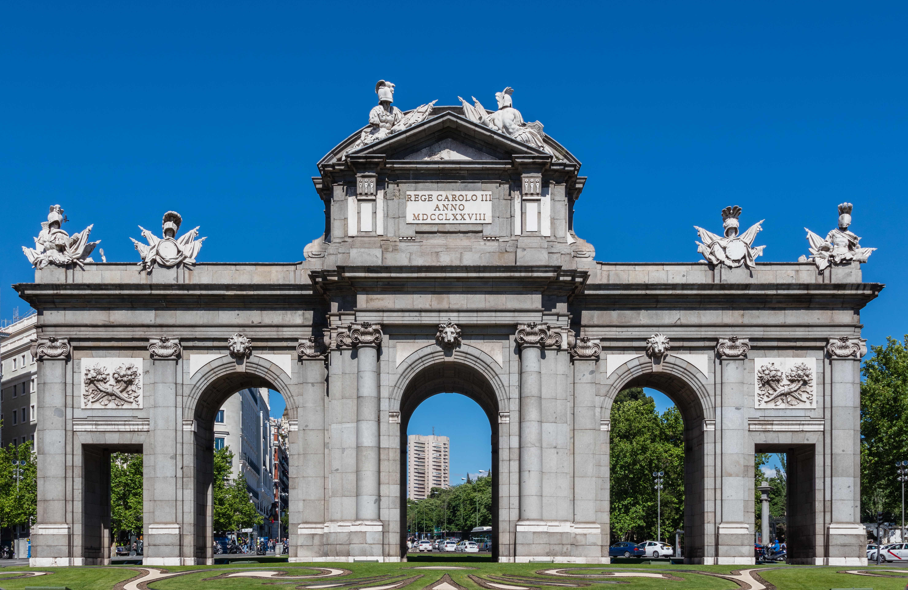
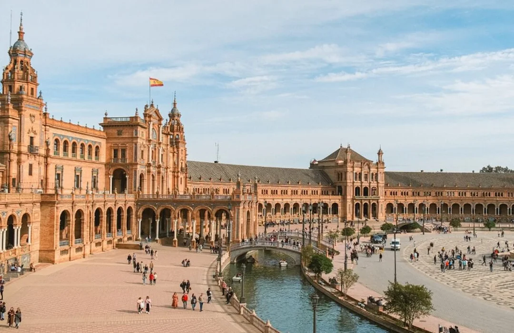

DESTINOS TRADICIONAIS DA ESPANHA
Barcelona
Barcelona é a capital da comunidade autônoma da Catalunha, Espanha, bem como o segundo município mais populoso do país, com uma população de 1,6 milhão dentro dos limites da cidade. A sua área urbana se estende para além dos limites administrativos da cidade com uma população de cerca de 4,7 milhões de pessoas, sendo a sexta área urbana mais populosa da União Europeia, depois de Paris, Londres, Madri, Vale do Ruhr e Milão. É a maior metrópole do Mar Mediterrâneo, localizada na costa entre as foz dos rios Llobregat e Besòs, e limitada ao oeste pela Serra de Collserola, cujo pico mais alto é de 512 metros de altura.

Madrid
Madrid é a capital e a maior cidade da Espanha, localizada no centro da Península Ibérica. Conhecida por suas avenidas elegantes, parques amplos como o Parque do Retiro e monumentos icônicos como a Puerta de Alcalá e o Palácio Real, a cidade é também um dos principais centros culturais da Europa, abrigando museus mundialmente famosos como o Museu do Prado.

Sevilla
Sevilha (em castelhano: Sevilla) é uma cidade espanhola situada a sudoeste da Península Ibérica, na comunidade autónoma da Andaluzia. É capital da província homónima. Segundo censo de 2019, havia 1 228 479 de habitantes. Sevilha tem a terceira maior catedral no mundo. Uma das pessoas lá enterradas é Cristóvão Colombo.
